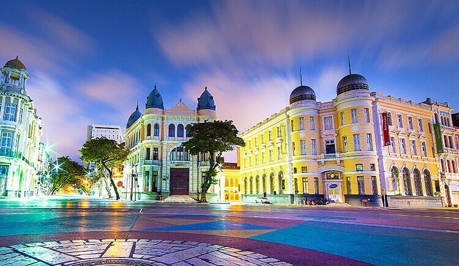
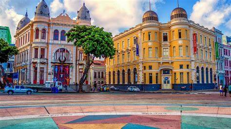

O Marco Zero é um dos pontos turísticos mais emblemáticos da cidade do Recife. Localizado no bairro do Recife Antigo, às margens do Rio Capibaribe, o Marco Zero é um marco geodésico que marca o início das contagens das distâncias das rodovias federais que partem da cidade.
O monumento é um grande círculo de 32 metros de diâmetro, composto por uma rosa-dos-ventos esculpida no piso, onde cada ponto cardeal é representado por esculturas que simbolizam a riqueza cultural e histórica do estado de Pernambuco.
Além disso, o Marco Zero é um local muito visitado durante as festividades, como o Réveillon, onde milhares de pessoas se reúnem para celebrar a chegada do ano novo, desfrutando de shows, fogos de artifício e muita alegria.
Abaixo estão alguns aspectos sobre o Marco Zero:
- Localização Estratégica
- Estrutura do Marco Zero
- Eventos e Festividades
- Espaço Cultural e Artístico
- Ponto de Encontro e Referência
- Acesso ao Rio Capibaribe
- Arquitetura e Iluminação Noturna
O Marco Zero é, portanto, mais do que um simples ponto de referência geográfica; é um símbolo cultural, histórico e social que desempenha um papel significativo na vida e na identidade da cidade do Recife.
.jpg)
Saiba mais: wikipedia